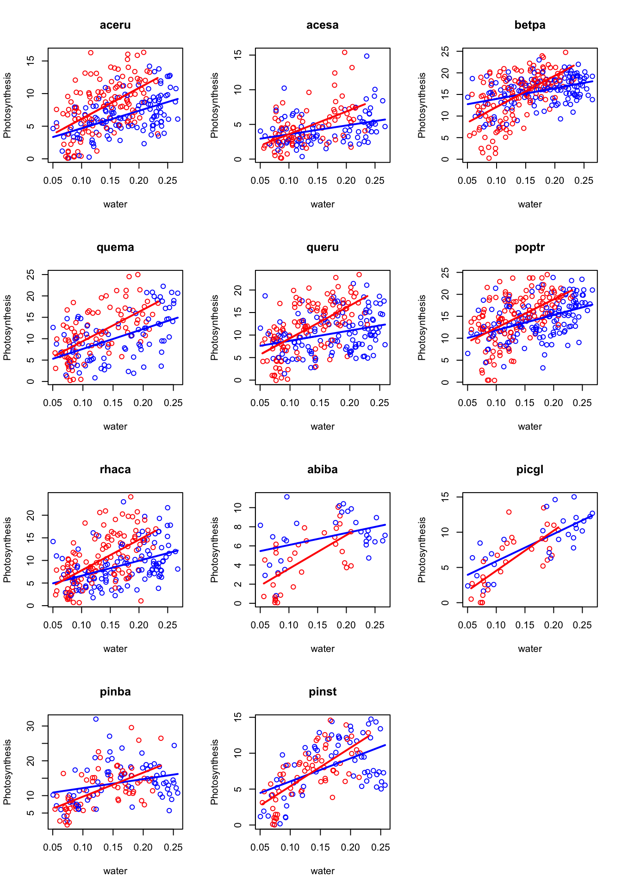
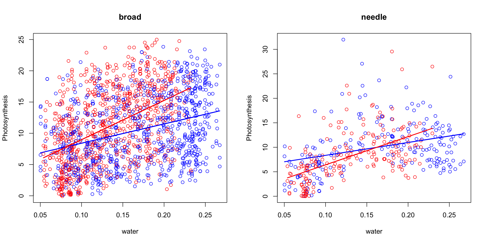

Last updated: 2018-11-25
workflowr checks: (Click a bullet for more information) ✔ R Markdown file: up-to-date
Great! Since the R Markdown file has been committed to the Git repository, you know the exact version of the code that produced these results.
✔ Environment: empty
Great job! The global environment was empty. Objects defined in the global environment can affect the analysis in your R Markdown file in unknown ways. For reproduciblity it’s best to always run the code in an empty environment.
✔ Seed:
set.seed(20181017)
The command set.seed(20181017) was run prior to running the code in the R Markdown file. Setting a seed ensures that any results that rely on randomness, e.g. subsampling or permutations, are reproducible.
✔ Session information: recorded
Great job! Recording the operating system, R version, and package versions is critical for reproducibility.
✔ Repository version: 13175cb
wflow_publish or wflow_git_commit). workflowr only checks the R Markdown file, but you know if there are other scripts or data files that it depends on. Below is the status of the Git repository when the results were generated:
Ignored files:
Ignored: .DS_Store
Ignored: .Rhistory
Ignored: .Rproj.user/
Untracked files:
Untracked: analysis/experiment.Rmd
Untracked: analysis/mulmodpre3.Rmd
Untracked: docs/figure/
Data from Reich et al. 2018, Nature.
2 sites, 6 blocks, 24 plots in total; 11 Species; 2 treatments; 6 measurements.
Group 11 species into two categories: Broad-leaf and needle-leaf.
Regard measurement day as random effects: total 49 measurement days. Day is a sub-partition of site.
Previous: Phototsynthesis v.s. Water content across 11 species:

Now across 2 species:

Photosynthesis as response; species2, treatment, and water content as predictors.
Model selection gives a Simple model: Photosynthesis ~ water+treatment+species2+treatment:species2+treatment:water+Random effects.
Coefficients:
Estimate Std. Error t value
(Intercept) 7.01 0.97 7.24
trtwarmed -2.65 0.73 -3.62
species2needle -0.78 0.46 -1.68
water 21.76 5.08 4.28
trtwarmed:species2needle -2.26 0.61 -3.70
trtwarmed:water 29.67 4.73 6.28Standard deviation of random components:
day plot block
2.12 0.24 0.58 4.80 mod2=lmer(Asat~trt*water+(1|day)+(1|block)+(1|plot)+(1|species2),data=datas)Coefficients:
Estimate Std. Error t value
(Intercept) 6.32 1.35 4.69
trtwarmed -3.00 0.73 -4.12
water 21.48 5.09 4.22
trtwarmed:water 29.57 4.74 6.23Standard deviation of random components:
day plot block species2
2.13 0.24 0.57 1.31 4.82 Is photosynthesis independent of treatment given water content?
Mutual Information (cond. Gauss.)
data: datas$Asat ~ datas$trt | datas$water
mi-cg = 89.198, df = 3, p-value < 2.2e-16
alternative hypothesis: true value is greater than 0Single term deletions
Model:
Asat ~ water + trt + (1 | day) + (1 | block) + (1 | plot) + (1 |
species2)
Df AIC LRT Pr(Chi)
<none> 11449
water 1 11462 15.02 < 2.2e-16 ***
trt 1 11457 9.86 < 2.2e-16 ***
---
Signif. codes: 0 '***' 0.001 '**' 0.01 '*' 0.05 '.' 0.1 ' ' 1Is leaf diffusive conductance indepednent of treatment given water content?
Mutual Information (cond. Gauss.)
data: datas$gs ~ datas$trt | datas$water
mi-cg = 49.392, df = 3, p-value = 1.077e-10
alternative hypothesis: true value is greater than 0Single term deletions
Model:
gs ~ water + trt + (1 | day) + (1 | block) + (1 | plot) + (1 |
species2)
Df AIC LRT Pr(Chi)
<none> -2484.9
water 1 -2468.8 18.1 <2e-16 ***
trt 1 -2486.9 0.0 0.99
---
Signif. codes: 0 '***' 0.001 '**' 0.01 '*' 0.05 '.' 0.1 ' ' 1Respone: Photosynthesis, water content. Predictors: treatment. Random effects: day, block, plot.
For needle-leaf species:
Fixed effects:
post.mean l-95% CI u-95% CI
(Intercept) 11.163 9.261 13.217
traitwater -10.993 -13.007 -9.065
trtwarmed -1.871 -2.889 -0.790
traitwater:trtwarmed 1.833 0.721 2.816Cov and Cor - day
PS Water
PS 10.236 0.073
Water 0.073 0.001 PS Water
PS 1.000 0.726
Water 0.726 1.000Sd: block, plot, random error
traitAsat.block traitwater.block
0.15 0.03 traitAsat.plot traitwater.plot
0.060 0.001 traitAsat.units traitwater.units
4.14 0.06 For broad-leaf species:
Fixed effects:
post.mean l-95% CI u-95% CI
(Intercept) 10.62 9.07 11.89
traitwater -10.45 -11.72 -8.91
trtwarmed 0.43 -0.07 0.91
traitwater:trtwarmed -0.47 -0.95 0.03Cov and Cor - day
PS Water
PS 10.576 0.070
Water 0.070 0.001 PS Water
PS 1.000 0.621
Water 0.621 1.000Sd: block, plot and random error
traitAsat.block traitwater.block
0.53 0.03 traitAsat.plot traitwater.plot
0.04 0.01 traitAsat.units traitwater.units
4.73 0.03 Respones: Photosynthesis v.s. tleaf
Needle-leaf species: None of the covariances between two reponses are significant.
Fixed effects:
post.mean l-95% CI u-95% CI
(Intercept) 11.18 9.33 13.44
traittleaf 12.83 8.41 16.79
trtwarmed -1.90 -2.91 -0.82
traittleaf:trtwarmed 2.47 1.05 3.86Sd: block, plot and random error
traitAsat.day traittleaf.day
3.34 6.00 traitAsat.block traittleaf.block
0.71 1.48 traitAsat.plot traittleaf.plot
0.07 0.69 traitAsat.units traittleaf.units
4.06 2.64 Broad-leaf species
Fixed effects:
post.mean l-95% CI u-95% CI
(Intercept) 10.57 9.23 12.00
traittleaf 15.98 13.54 19.02
trtwarmed 0.46 -0.02 1.02
traittleaf:trtwarmed 0.07 -0.83 1.03Cov and Cor - day
PS Water
PS 9.223 4.925
Water 4.925 28.651 PS Water
PS 1.000 0.303
Water 0.303 1.000Cov and Cor - random error
PS Water
PS 22.691 -1.239
Water -1.239 6.960 PS Water
PS 1.000 -0.099
Water -0.099 1.000Sd: block, plot
traitAsat.block traittleaf.block
0.55 1.39 traitAsat.plot traittleaf.plot
0.03 0.75 R version 3.5.1 (2018-07-02)
Platform: x86_64-apple-darwin15.6.0 (64-bit)
Running under: macOS High Sierra 10.13.6
Matrix products: default
BLAS: /Library/Frameworks/R.framework/Versions/3.5/Resources/lib/libRblas.0.dylib
LAPACK: /Library/Frameworks/R.framework/Versions/3.5/Resources/lib/libRlapack.dylib
locale:
[1] en_US.UTF-8/en_US.UTF-8/en_US.UTF-8/C/en_US.UTF-8/en_US.UTF-8
attached base packages:
[1] stats graphics grDevices utils datasets methods base
other attached packages:
[1] bnlearn_4.4 MCMCglmm_2.26 ape_5.2 coda_0.19-2 lme4_1.1-18-1
[6] Matrix_1.2-14
loaded via a namespace (and not attached):
[1] Rcpp_0.12.18 knitr_1.20 whisker_0.3-2
[4] magrittr_1.5 workflowr_1.1.1 splines_3.5.1
[7] MASS_7.3-50 cubature_1.4-1 lattice_0.20-35
[10] minqa_1.2.4 stringr_1.3.1 tools_3.5.1
[13] parallel_3.5.1 grid_3.5.1 nlme_3.1-137
[16] R.oo_1.22.0 corpcor_1.6.9 git2r_0.23.0
[19] htmltools_0.3.6 yaml_2.2.0 rprojroot_1.3-2
[22] digest_0.6.17 tensorA_0.36.1 nloptr_1.2.1
[25] R.utils_2.7.0 evaluate_0.11 rmarkdown_1.10
[28] stringi_1.2.4 compiler_3.5.1 backports_1.1.2
[31] R.methodsS3_1.7.1This reproducible R Markdown analysis was created with workflowr 1.1.1